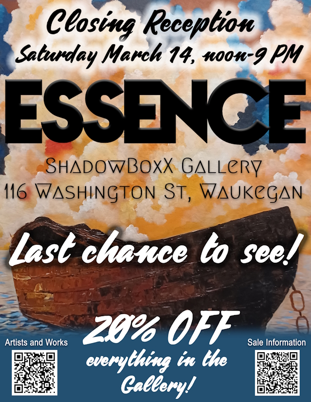

Essence Exhibition – Closing Reception and Artwork Sale
The ESSENCE Exhibition at ShadowBoxX Gallery winds down this weekend, with a closing reception on Saturday evening, March 14 between 5 and 9 PM. It’s the last chance to see the stunning work from our artist friends in Nigeria. Plus, you can purchase any work in the show at 20% off!
This show spotlights the bold, beautiful artwork that made up this stunning exhibition. The artwork speaks to African tradition, history and culture.
Free and open to the public between 5 and 9 PM Saturday and Sunday.